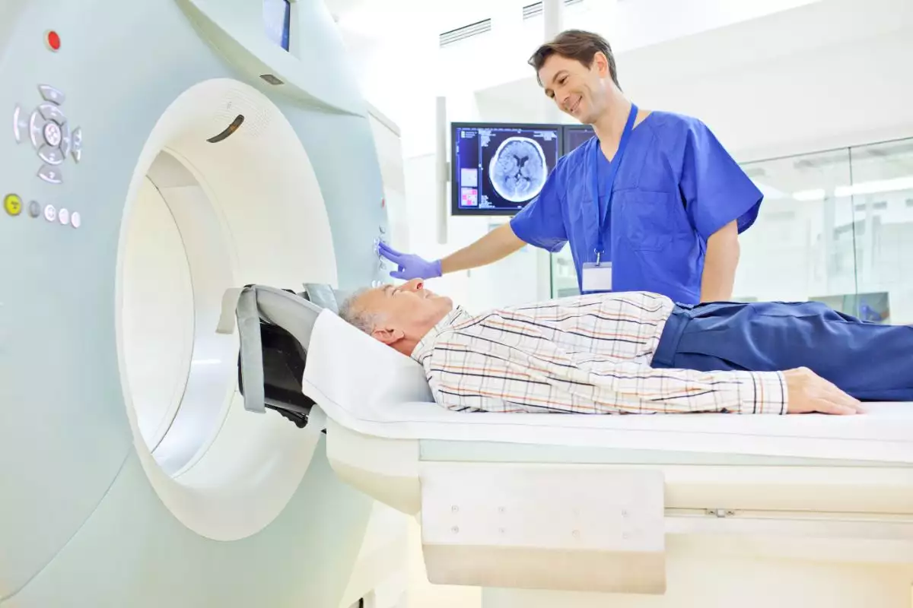
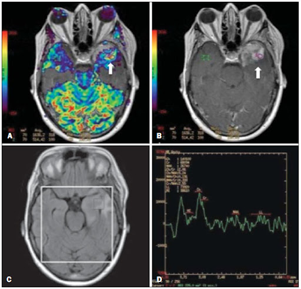
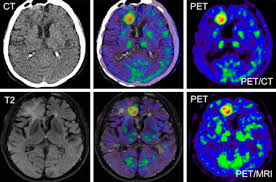
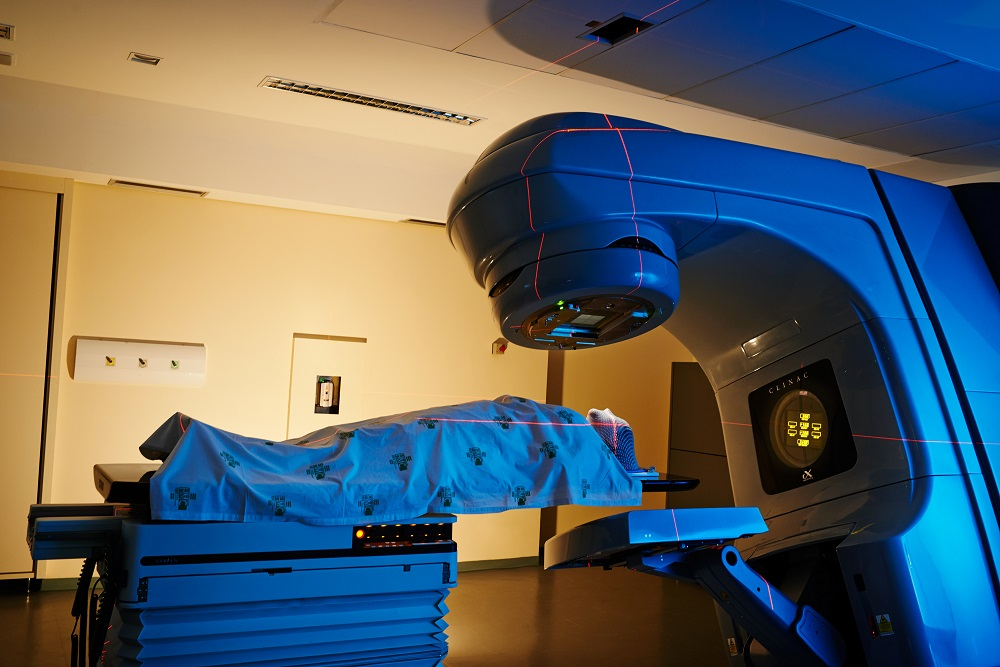
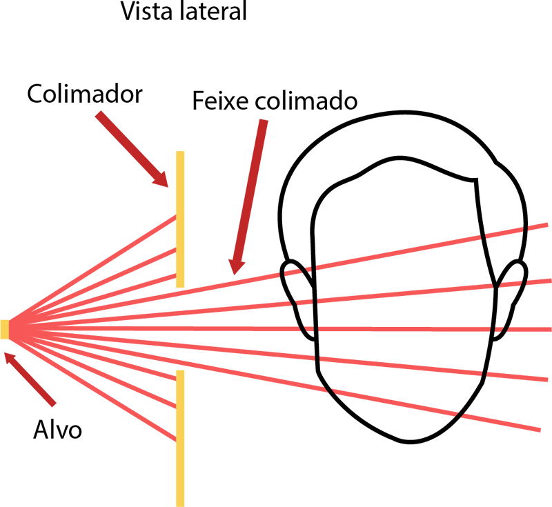
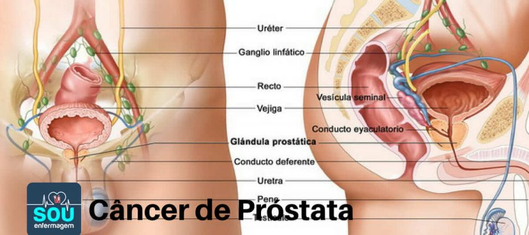
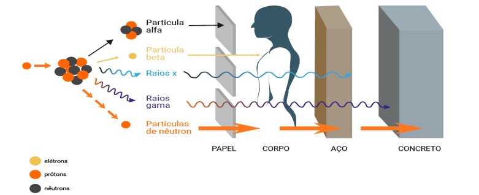

IMRT e IGRT - Apresentação de Imagens
1. Formação de Imagem
Tomografia Computadorizada (TC)
Imagem de um exame de TC mostrando uma vista tridimensional do corpo.
Ressonância Magnética (RM)
Imagem de uma RM exibindo um tumor em alta definição.
Tomografia por Emissão de Pósitrons (PET)
Imagem PET destacando áreas de atividade metabólica aumentada.
Ultrassom

Imagem de ultrassom médico usado para monitoramento de tumores móveis.
2. Equipamentos Utilizados
Aceleradores Lineares (Linacs)
Foto de um acelerador linear usado em radioterapia.
Colimadores Multilâminas (MLCs)
Imagem de colimadores multilâminas mostrando como o feixe de radiação é ajustado.
PET-CT

Imagem de um scanner PET-CT, mostrando a integração de imagens anatômicas e funcionais.
3. Patologias Estudadas
Câncer de Próstata
Esquema mostrando a localização do câncer de próstata em relação aos órgãos adjacentes (bexiga, reto).
4. Tipo de Energia Utilizada
Radiação Ionizante
Esquema mostrando a penetração de fótons no corpo.
PET-CT (Fluorodeoxiglicose - FDG)

Imagem mostrando como o FDG é utilizado para rastrear a atividade metabólica no corpo.